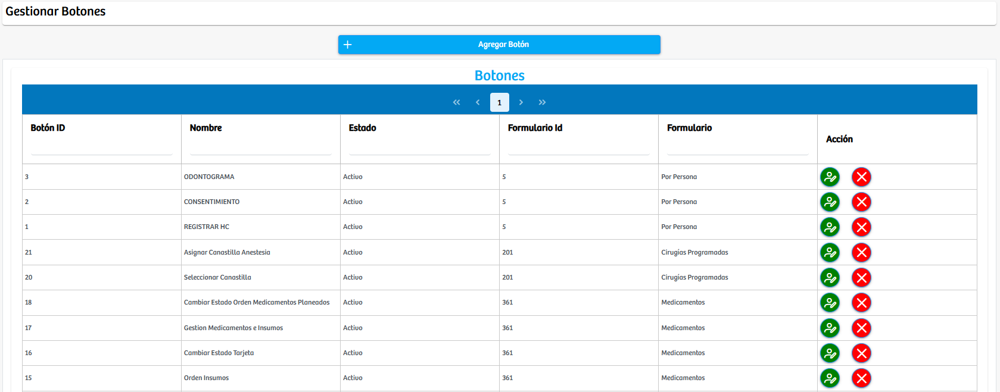

Modulos Sas-Web
Funcionalidades
Gestion de los Botones
Este modulo es muy similar a los anteriores, se diferencia en el elemento que estamos tratando. Ahora para crear un botón tenemos el mismo botón inicial: “Agregar Boton”, luego de el se encuentra la tabla principal de este modulo. Esta nos trae información sobre los botones que hay en el aplicativo como: Botón ID, nombre, estado, formularioID, formulario y el campo de acción que es donde podremos eliminar o actualizar un registro. Con esta información logramos obtener una mejor idea de donde se encuentran ubicados los botones en el aplicativo y cual es el formulario en el que van a salir.
Luego de presionar el boton: "Agregar Botón" se abrira una nueva vista. En la cual podremos crear un boton nuevo, aqui podremos elegir el nombre, el formulario y modulo donde va a aparecer y los roles de usuario que pueden acceder a el dentro de la aplicacion.